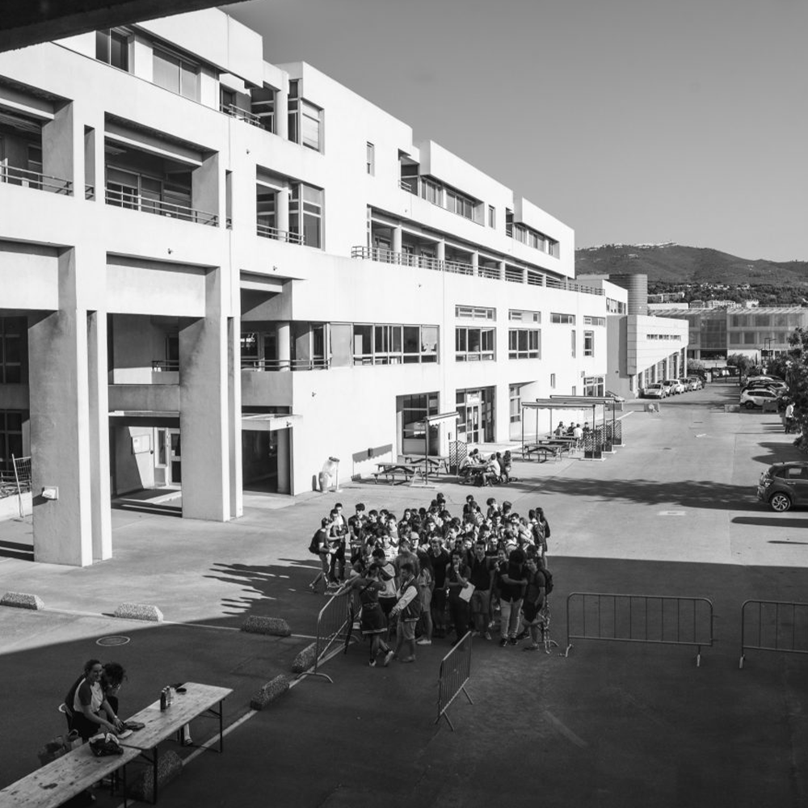
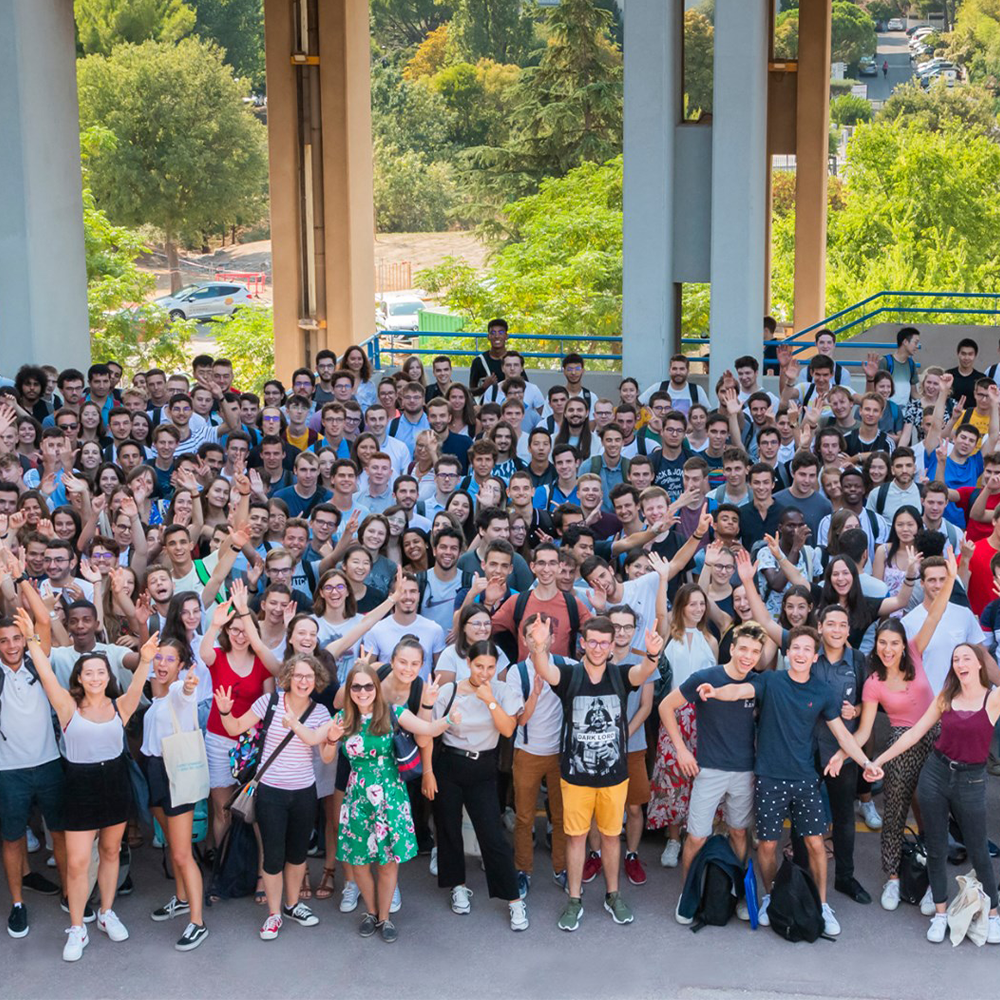
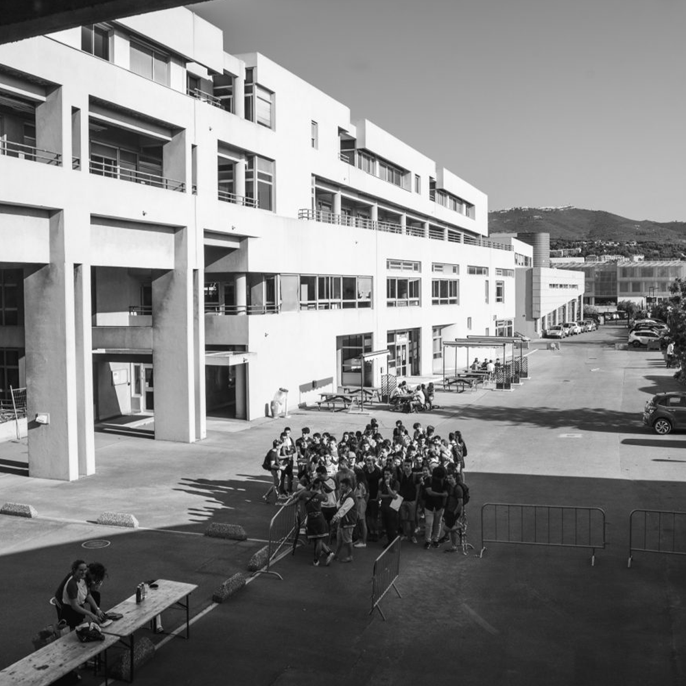
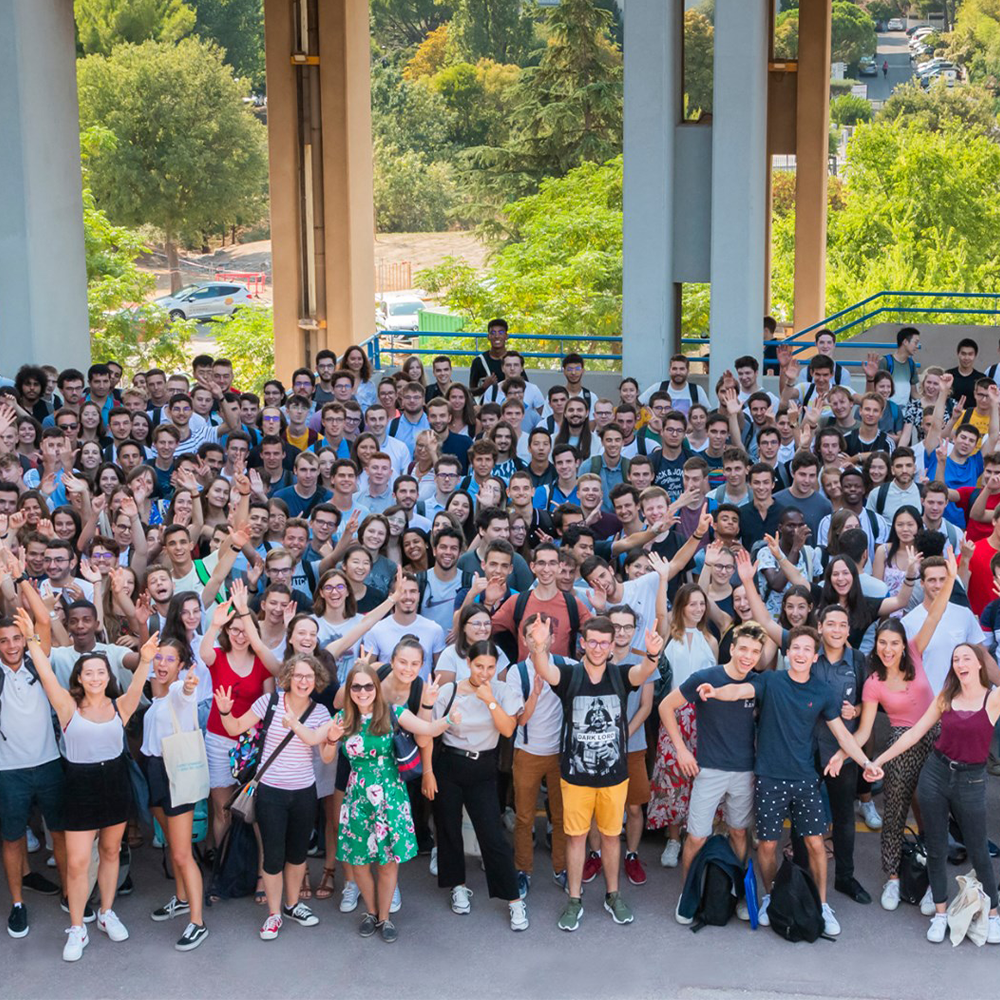

Notre école se situe sur le Technopôle de Château-Gombert dans le 13e arrondissement de Marseille. C'est une zone calme, fréquentée en majorité par des étudiants et les chercheurs des laboratoires alentours.
Le métro est à quelques minutes de bus de l'école et à seulement 15 minutes à pieds. Au sein de l'établissement, tu trouveras de nombreux espaces verts ainsi qu'un terrain de pétanque.
 




Au delà des clichés, Marseille est une ville vivante qui regorge d'activités ! Avec ses 300 jours de soleil par an, vous pourrez bronzer sur les plages, vous promener et vous baigner dans les calanques, visiter les rues typiques du Panier ou plus simplement vous poser en terrasse sur le Vieux-Port . Au travers des innombrables musées, dont le fameux MuCEM, mais aussi des animations sportives comme la Color Run ou la Run and Mix vous ne pourrez que vous épanouir à Marseille.
Niveau vie étudiante, pas de soucis à se faire : avec ses quelques 50 000 étudiants, du Vieux-Port au Cours Julien en passant par le Rooftop Marseille est une ville qui bouge tous les soirs de la semaine.
Les Centraliens investissent en début d'année plusieurs résidences du Technopôle. Elles proposent des appartements meublés d'environ 20 m². Il en existe plusieurs :
Il est également envisageable de loger en centre-ville mais peu de 1ère années choisisse cette option. C'est là-bas que la majorité des 2As vivent en colocation dans les quartiers du Vieux-Port, de Réformés ou de Cinq-Avenues.